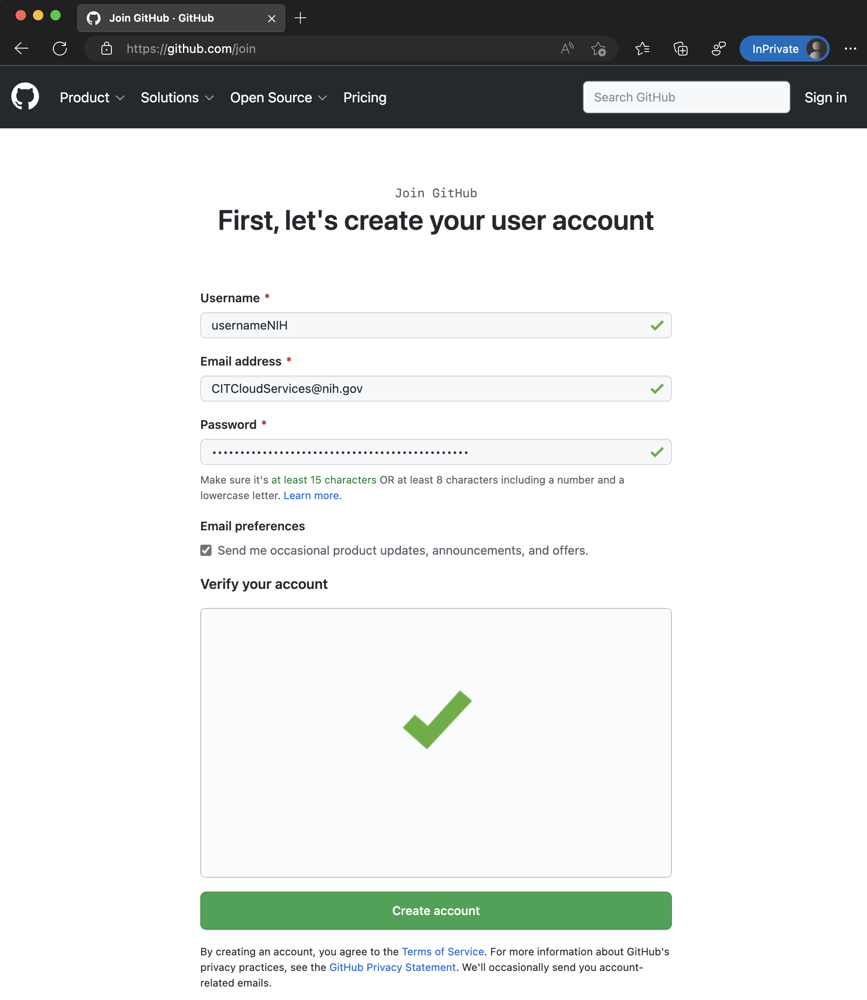
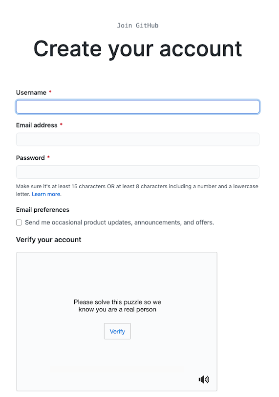
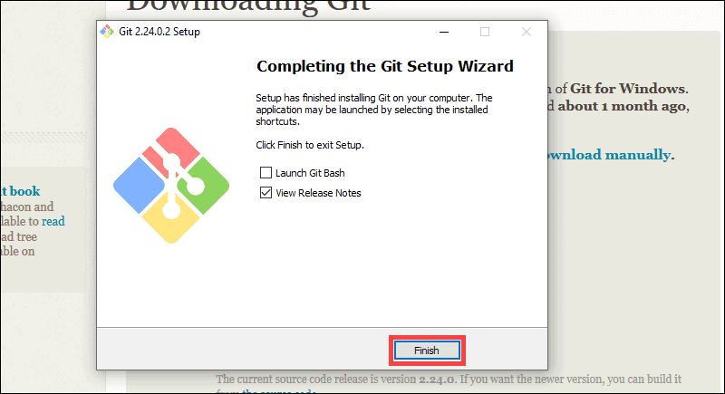

Open GitHub: https://github.com

Click Sign Up
Enter:
Email address
Password
Username

Verify your account via email.
Login to GitHub.
Verify installation:
git --version
You should see the installed Git version if the installation was successful.

git config --global user.name "Your Name" git config --global user.email "your@email.com"